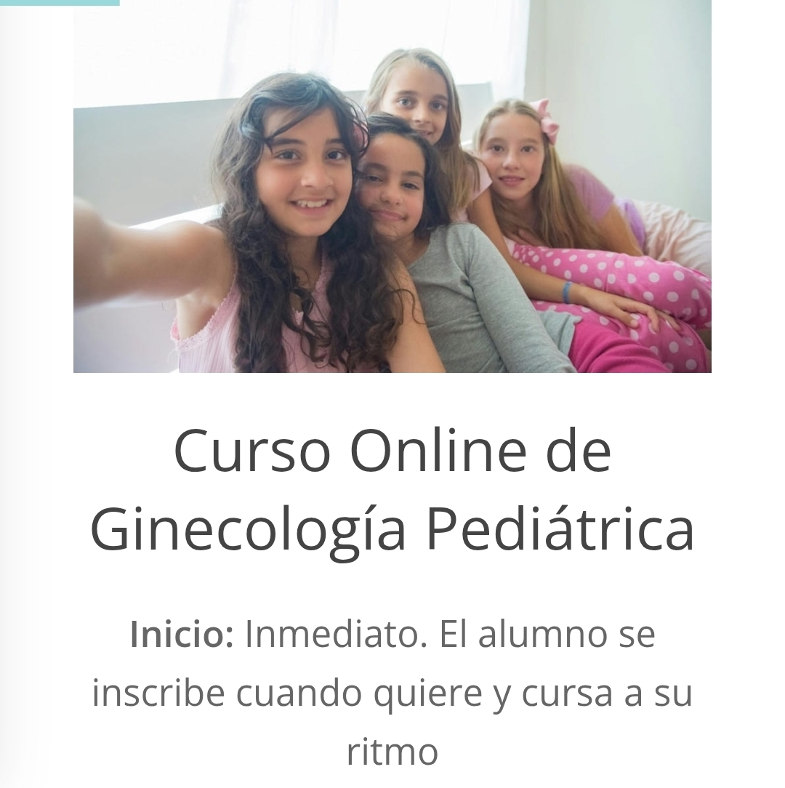
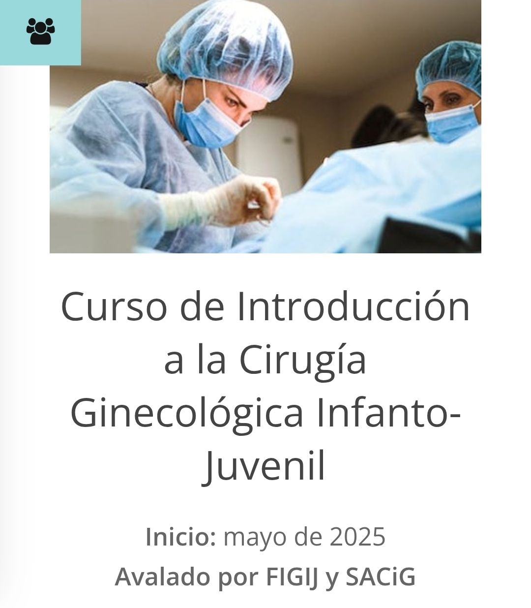

Comunidad
Espacio dirigido a niñas, adolescentes y sus familias interesadas en su salud integral.
AccederLa Asociación AMEGIA promueve el abordaje integral de la ginecología pediátrica y adolescente, fomentando la prevención, educación y trabajo interdisciplinario.
Miembro de organizaciones internacionales del área médica.
Lectura recomendada
¿Quién atiende a niñas y adolescentes?
Conozca la importancia de la atención especializada en ginecología pediátrica y adolescente, así como el papel de los profesionales en este ámbito.
Leer artículo completoContenido educativo
Tipos de membresía y requisitos
Conozca los requisitos y beneficios para integrarse a AMEGIA en cualquiera de sus modalidades.
Socio Honorario
- Formación presencial mayor a 6 meses avalada por institución autorizada.
- O mínimo 1 año de experiencia en atención ginecológica infanto juvenil.
- Currículum comprobatorio.
- Participación en reuniones con voz, sin voto.
- Acceso a eventos, publicaciones y beneficios.
- No puede ocupar cargos directivos.
- Pago anual de cuotas.
Socio Adherente
- Formación virtual o presencial hasta 6 meses.
- Currículum comprobatorio.
- Participación en congresos y actividades académicas.
- Voz en asambleas, sin voto.
- Acceso a publicaciones y beneficios.
- Pago anual de cuotas.
Socio Académico
- Dirigido a residentes, estudiantes, enfermería y otras licenciaturas.
- Participación en congresos, seminarios y eventos.
- Acceso a publicaciones.
- Becas y descuentos.
- Presentar solicitud y currículum.
Mesa Directiva
Conozca a las y los profesionales que integran la mesa directiva de AMEGIA.
Dra. Mildret Fernanda Martínez Arellano
Presidenta
Ginecóloga y Obstetra, especialista en Ginecología Infanto Juvenil, con formación nacional e internacional en Argentina y México. Cuenta con experiencia en instituciones como IMSS, Secretaría de Salud CDMX y práctica privada especializada.
Dr. Wilfredo José Gutiérrez Moreno
Vicepresidente
Ginecólogo y Obstetra con amplia trayectoria en ginecología pediátrica y adolescente, certificado por organismos nacionales e internacionales, con experiencia hospitalaria, militar y privada.
Dr. Gonzalo Sedas Granat
Miembro de Mesa Directiva
Especialista en Ginecología y Obstetricia con enfoque en adolescencia, con experiencia en hospitales militares y regionales en México.
Dr. Jorge Alonso López Carrasco
Miembro de Mesa Directiva
Médico Pediatra y especialista en atención integral del adolescente, con trayectoria académica, hospitalaria y docente en diversas universidades.
Hazte miembro activo
Forma parte de nuestra comunidad de profesionales dedicados a la salud ginecológica de niñas y adolescentes.
- Acceso a cursos, talleres y congresos especializados.
- Colaboración en investigación y publicaciones.
- Red de apoyo entre colegas.
¡INSCRÍBETE HOY MISMO!
🌐 www.amegia.org
📧 direccion@amegia.org
📞 +52 55 9868 3198